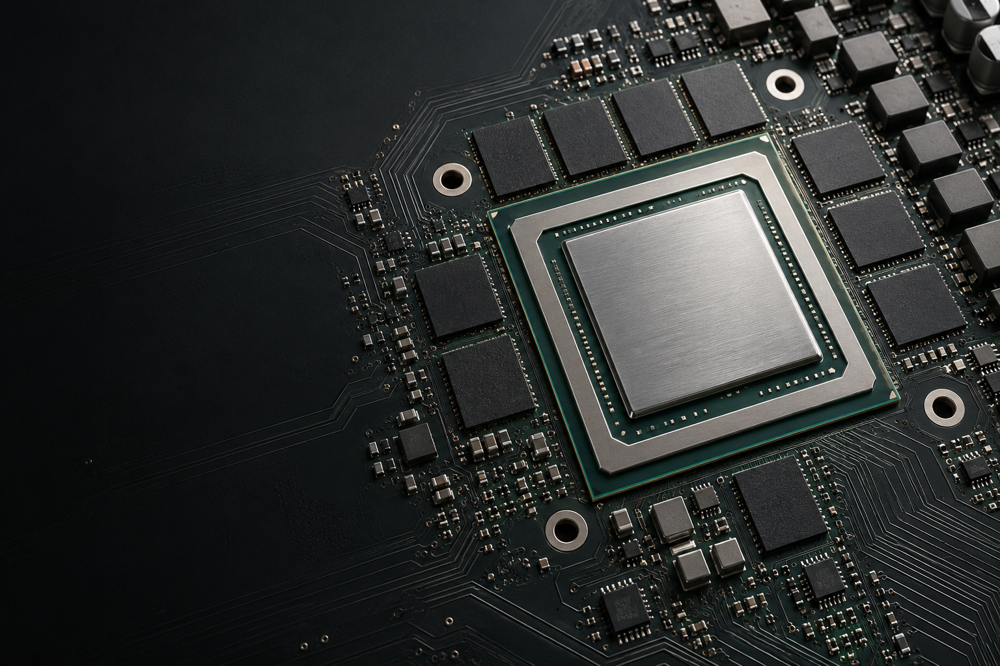

我的工作台01 / 04
从你熟悉的电脑，
开始下一件有意思的事。
本地运行有记忆有工具
给日常，多一点可能今天，
今天，
你想做点什么？
一个还没成形的念头，也值得认真聊聊。
把它交给 MoE4All，一起找出下一步。
从一句话开始
自己的事，留在自己这里有些话，
有些话，
留在自己电脑里就好。
本地模型在本机思考，对话和长期记忆也保存在本机。工作资料、私人计划、还没公开的想法，都能在自己的环境里慢慢处理。
云端模型与联网工具，由你选择是否接入。
你的电脑
一份合作协议本地
自己的私人计划本地
还没公开的新想法本地
本地模型本地对话本地记忆
一起处理，不必交给云端模型。
让对话，接着往下走想法有个去处。
想法有个去处。
做事有个搭档。
对话、记忆和工具，都在一个工作台里。
聊个新想法，也能接着上次的话题继续。
MoE4All Agent · 演示工作区
01 / 04
少一点，从头解释。
把对话里的有用信息留下来。下次见面，带着之前的背景接着聊。
Mneme / 长期记忆给事情，安排个时间。
把需要定期做的事交给任务日程。工作台保持运行，到点就开始。
Cron / 定时任务换个屏幕，接着聊。
手机配对电脑上的工作台。离开桌面，也能继续手里的对话。
Remote Web UI / 手机连接
释放卡之潜力不只是一台游戏电脑。
不只是一台游戏电脑。
也是你的 AI 电脑。
显卡的本事，不必只用来打游戏。
MoE4All 把显存、内存和 SSD 一起用起来，让电脑装得下更大的 AI 模型。
AMDNVIDIAintel
看看引擎原理与实测性能现在，轮到你的想法了带上你的想法。
带上你的想法。
工作台，我们准备好了。
下载 MoE4AllMoE4All v1.0.0
- 01 /
下载，一个整合包。
应用、本地引擎和定制插件，一起准备好。给下一次对话，一个完整的家。
- 02 /
选一个，喜欢的模型。
下载适合自己用途的模型。资源怎么分配，先交给自动配置。
- 03 /
说说，你想做的事。
一句话，一个问题，一点灵感。不用先想好完美的提示词。
不会写代码，也能用吗？
可以。日常使用就在桌面工作台里：选好模型，开始对话。第一次安装，跟着使用指南走就好。
这个 AI，在哪里运行？
选择本地模型，就在你的电脑上运行，对话与记忆也保存在本地。云端模型和联网工具是可选连接，由你自己决定。
怎么选适合电脑的模型？
先从自动配置和较小模型开始，熟悉之后再尝试更大的模型。模型管理与文档里，可以继续了解内存和存储的要求。